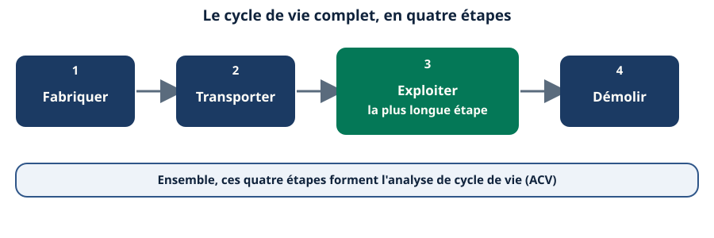
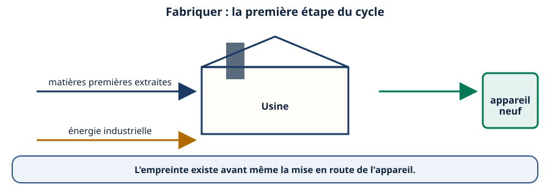
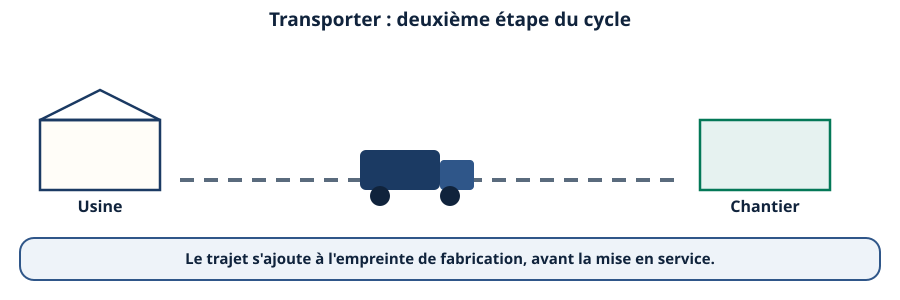
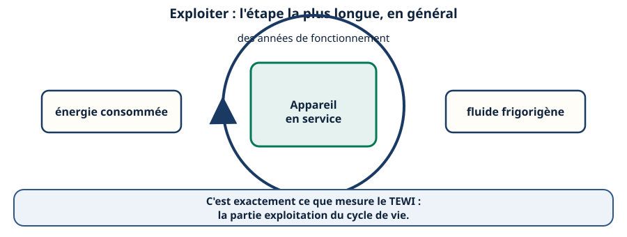
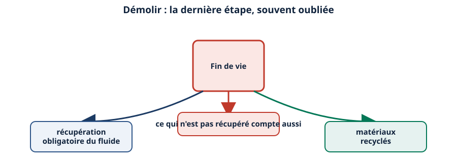
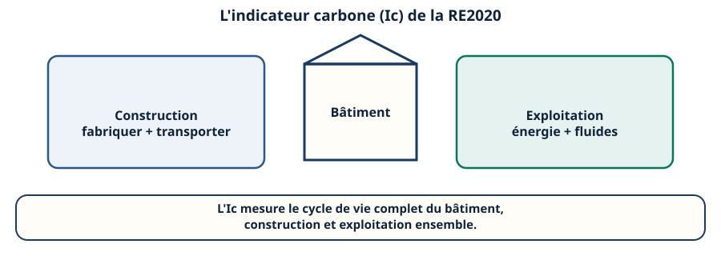
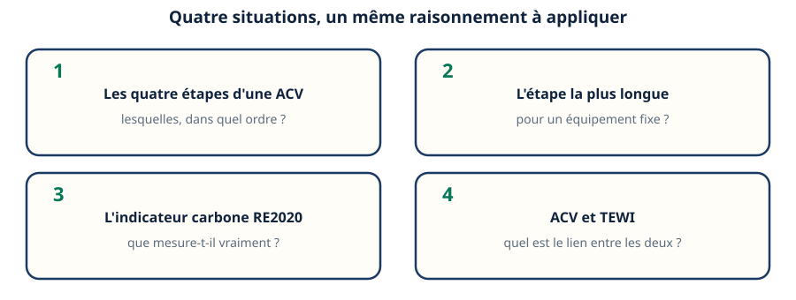
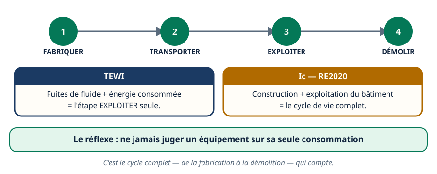

Mini-station commentée · 8 écrans et 4 questions · environ 10 minutes
Objectif
À la fin de la station, vous savez nommer les quatre étapes d'une analyse de cycle de vie, situer le TEWI dans ce cycle, et expliquer ce que mesure réellement l'indicateur carbone de la RE2020 : pas seulement la consommation, mais le cycle de vie complet du bâtiment.
Chaque écran peut être expliqué à voix haute : le bouton « Écouter » commente ce que vous voyez. Rien n'est dit qui ne soit aussi écrit.
1 / 12
Écran 1 sur 8
Les quatre étapes d'un cycle de vie
L'analyse de cycle de vie (ACV) mesure l'impact environnemental d'un équipement sur toutes ses étapes, pas seulement son fonctionnement : fabriquer, transporter, exploiter, démolir.

Ensemble, ces quatre étapes forment l'analyse de cycle de vie.
Écran 2 sur 8
Fabriquer : l'empreinte avant même la mise en route
Extraire les matières premières, consommer de l'énergie industrielle pour les transformer : l'empreinte existe avant même que l'appareil ne soit mis en route.

L'empreinte commence avant la mise en route de l'appareil.
Écran 3 sur 8
Transporter : de l'usine au chantier
De l'usine jusqu'au chantier ou au point d'installation : le trajet s'ajoute à l'empreinte de fabrication, avant même la mise en service.

Le trajet compte, lui aussi, avant la mise en service.
Écran 4 sur 8
Exploiter : la plus longue étape, en général
Pour un équipement fixe, l'exploitation dure toute la vie de l'installation : énergie consommée et fluide frigorigène. C'est exactement ce que mesure le TEWI, vu dans une autre station du même réseau.

C'est exactement ce que mesure le TEWI : la partie exploitation du cycle de vie.
Écran 5 sur 8
Démolir : fin de vie, récupération et recyclage
Fin de vie : récupération obligatoire du fluide, démontage, recyclage ou mise au rebut des matériaux. Ce qui n'est pas récupéré pèse aussi dans le bilan.

Ce qui n'est pas récupéré compte aussi dans le bilan.
Écran 6 sur 8
Ce que mesure l'indicateur carbone de la RE2020
L'indicateur carbone (Ic) de la RE2020, réglementation thermique des bâtiments neufs, mesure le cycle de vie complet du bâtiment : construction et exploitation, ensemble.

Le cycle de vie complet du bâtiment, construction et exploitation ensemble.
Écran 7 sur 8
Le raisonnement : quatre situations de terrain
« Quelles sont les quatre étapes d'une ACV ? » → Fabriquer, transporter, exploiter, démolir, dans cet ordre.
« Quelle étape pèse le plus longtemps pour un équipement fixe ? » → L'exploitation, car elle dure toute la vie de l'installation.
« Que mesure l'indicateur carbone de la RE2020 ? » → Le cycle de vie complet du bâtiment, construction et exploitation.
« Quel est le lien entre l'ACV et le TEWI ? » → Le TEWI est une partie de l'ACV, centrée sur l'étape exploiter.

Dans les quatre cas, la même question : à quelle étape du cycle est-ce qu'on regarde ?
Écran 8 sur 8
Bilan : le cycle complet, du berceau à la démolition
Quatre étapes : fabriquer, transporter, exploiter, démolir.
L'exploitation est en général la plus longue pour un équipement fixe.
Le TEWI n'est qu'une partie de l'étape exploiter (fuites + énergie).
L'indicateur carbone de la RE2020 couvre le cycle de vie complet du bâtiment.
Ce qui n'est pas récupéré à la démolition compte aussi dans le bilan.
Le réflexe : ne jamais juger un équipement sur sa seule consommation.

C'est le cycle complet, de la fabrication à la démolition, qui compte.
Question 1 sur 4
Quelles sont les quatre étapes d'une analyse de cycle de vie ?
Rappel de l'écran 1 — les quatre étapes.
Question 2 sur 4
Pour un équipement fixe, quelle étape pèse le plus longtemps ?
Rappel de l'écran 4 — l'exploitation.
Question 3 sur 4
Que mesure l'indicateur carbone de la RE2020 ?
Rappel de l'écran 6 — le cycle complet du bâtiment.
Question 4 sur 4
Quel est le lien entre l'ACV d'un équipement et son TEWI ?
Rappel de l'écran 8 — le TEWI, une partie du cycle complet.
Les correspondances de la station
La RE2020 (sous-ligne Thermique) — le détail de l'indicateur carbone, construction et exploitation.
NF EN 378 (même sous-ligne) — ce que la classe du fluide impose en plus, sur l'étape exploitation.
Les deux stations sont en préparation sur le plan du réseau.